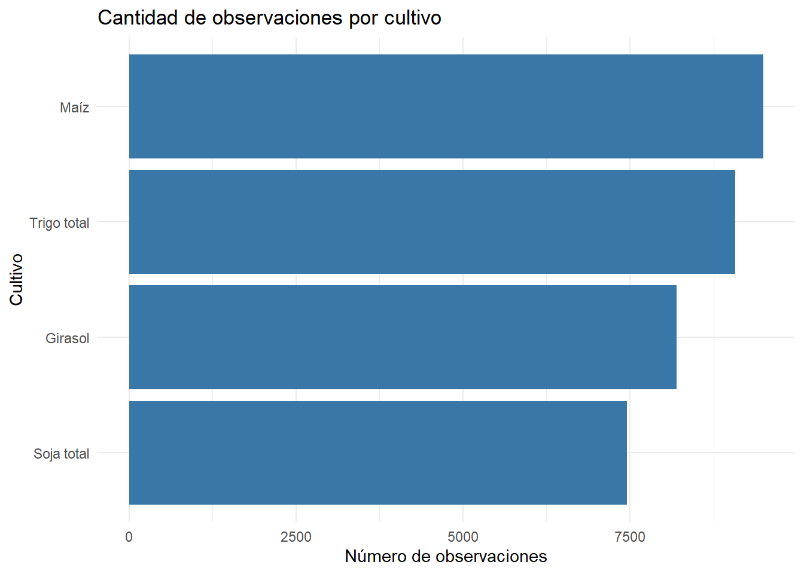
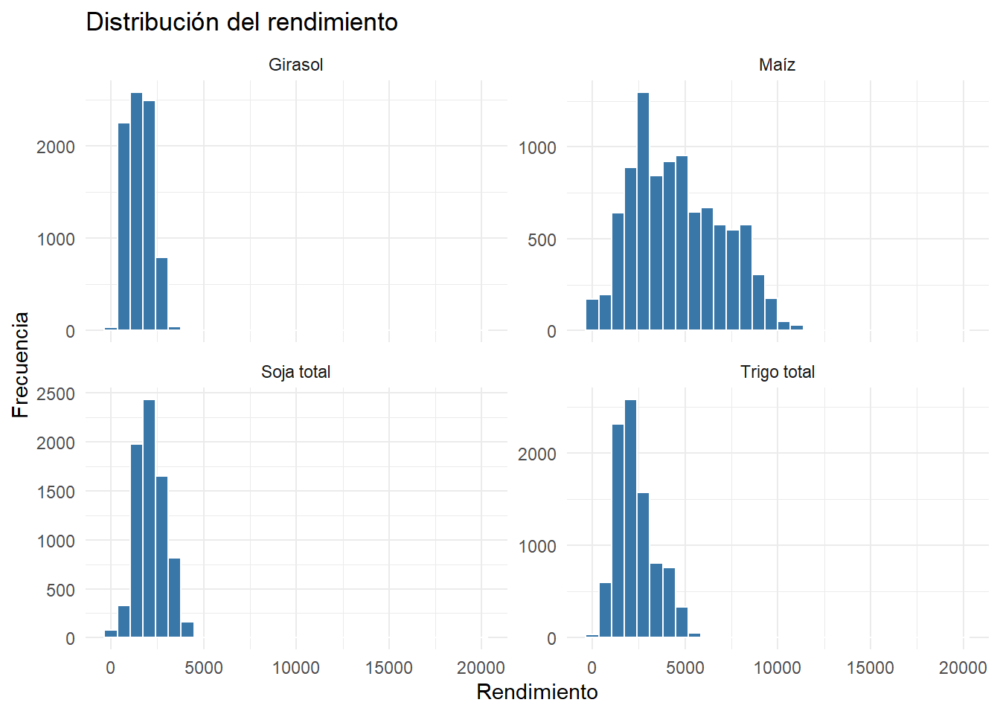

Este informe explora el archivo Rendimientos_decada.xlsx. Cada fila representa una observación de un cultivo, una campaña y una ubicación. Para reproducirlo, guarde este documento en la misma carpeta que el archivo Excel y tenga instalados los paquetes readxl, dplyr, tidyr, ggplot2 y knitr.
Lectura y verificación de los datos
library(readxl)library(dplyr)
Attaching package: 'dplyr'
The following objects are masked from 'package:stats':
filter, lag
The following objects are masked from 'package:base':
intersect, setdiff, setequal, union
library(tidyr)library(ggplot2)library(knitr)archivo <-"Rendimientos_decada.xlsx"if (!file.exists(archivo)) {stop("No se encontró ", archivo, ". Guarde el Excel junto a este documento.")}datos <-read_excel(archivo)
Warning: Expecting numeric in F8703 / R8703C6: got 'SD'
Warning: Expecting numeric in G8703 / R8703C7: got 'SD'
Warning: Expecting numeric in H8703 / R8703C8: got 'SD'
faltantes <-setdiff(nombres_esperados, names(datos))if (length(faltantes) >0) {stop("Faltan estas variables esperadas: ", paste(faltantes, collapse =", "))}cat("\nVerificación correcta: están presentes todas las variables esperadas.\n")
Verificación correcta: están presentes todas las variables esperadas.
Descripción breve
El conjunto contiene 34224 filas y 8 variables. Las variables descriptivas identifican el cultivo, la campaña, la provincia y el departamento; las restantes registran superficies, producción y rendimiento.
conteo_cultivos <- datos %>%count(Cultivo, name ="Observaciones", sort =TRUE)kable(conteo_cultivos, caption ="Cantidad de observaciones por cultivo")
Se identifican automáticamente las variables numéricas y se comprueba que las cuatro variables de superficie, producción y rendimiento tengan ese tipo.
La tabla presenta las mismas medidas para cada combinación de cultivo y variable numérica. n indica la cantidad de valores no faltantes usados en cada cálculo.
ggplot(conteo_cultivos, aes(x =reorder(Cultivo, Observaciones), y = Observaciones)) +geom_col(fill ="#3977A8") +coord_flip() +labs(title ="Cantidad de observaciones por cultivo",x ="Cultivo",y ="Número de observaciones" ) +theme_minimal()

Distribución del rendimiento por cultivo
ggplot(datos, aes(x = Rendimiento)) +geom_histogram(bins =30, fill ="#3977A8", color ="white", na.rm =TRUE) +facet_wrap(~ Cultivo, scales ="free_y") +labs(title ="Distribución del rendimiento",x ="Rendimiento",y ="Frecuencia" ) +theme_minimal()

Superficie sembrada y producción
ggplot(datos, aes(x =`Sup. Sembrada`, y = Producción, color = Cultivo)) +geom_point(alpha =0.35, na.rm =TRUE) +labs(title ="Producción en relación con la superficie sembrada",x ="Superficie sembrada",y ="Producción",color ="Cultivo" ) +theme_minimal()